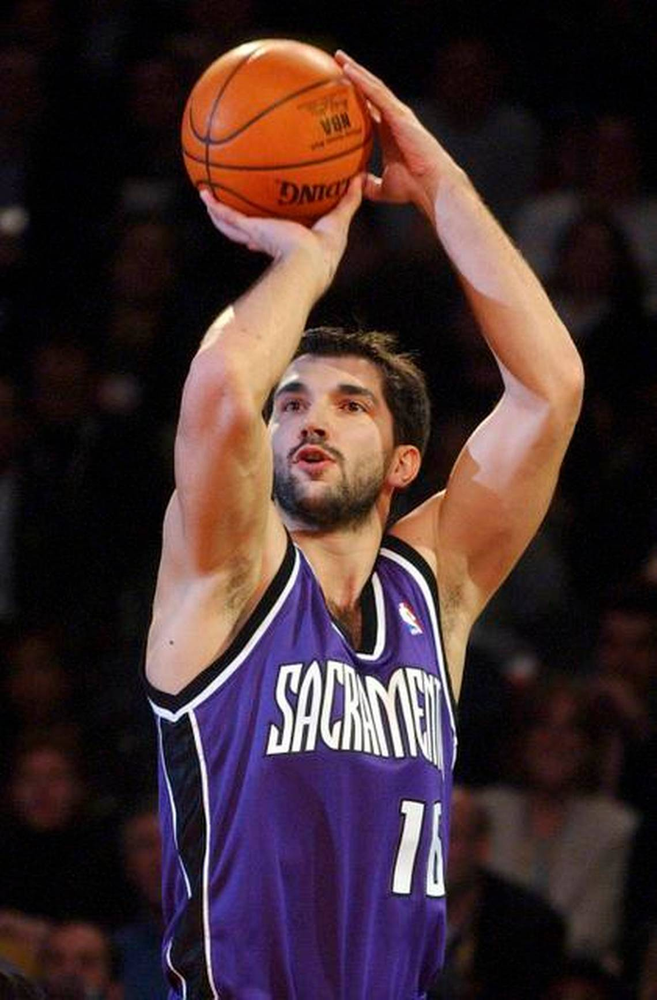

Биографија
Пеђа Стојаковић је бивши српски кошаркаш, познат као један од најбољих шутера своје генерације. Рођен је 9. јуна 1977. године у Славонској Пожеги.
Кошарком је почео да се бави веома млад, а током каријере изградио је репутацију одличног шутера за три поена. Посебно је остао упамћен по својим наступима у NBA лиги.
Његов шут и прецизност учинили су га веома важним играчем Сакраменто Кингса.
